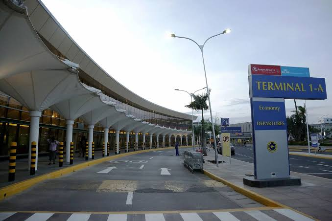
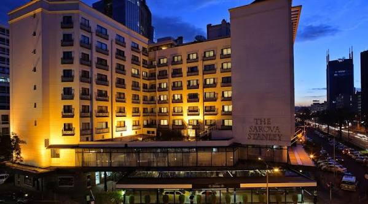
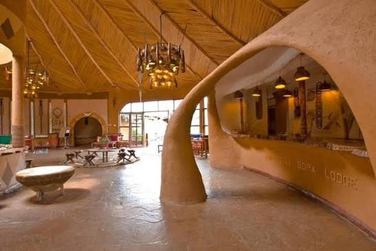
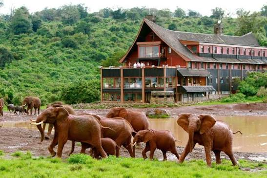
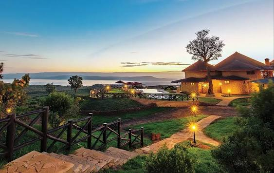
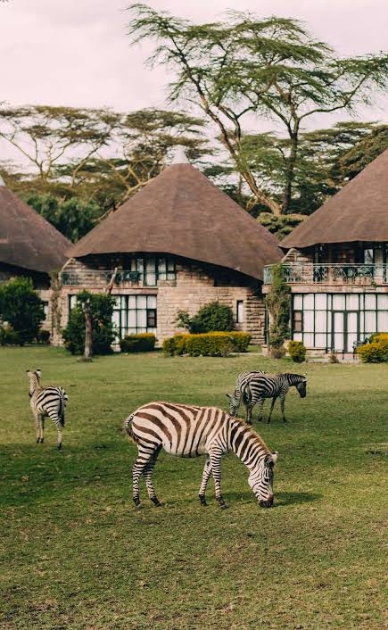
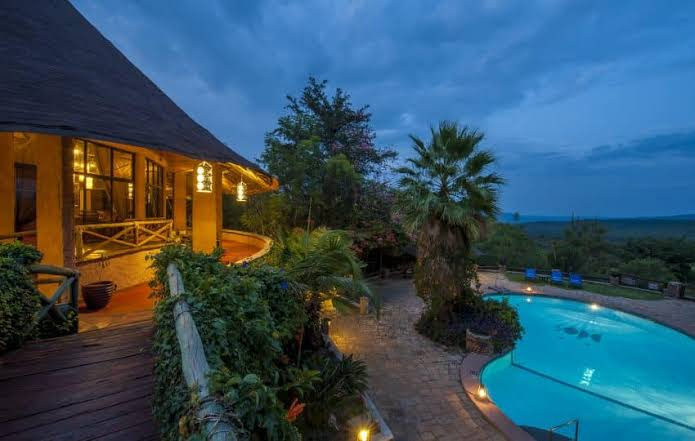

The Essence of Kenya: 10 Days Safari Adventure
Experience Kenya's finest on a luxury safari—from Amboseli to the Masai Mara, with unforgettable Big Five adventures.
Discover the Essence of Kenya in Luxury
Experience Kenya's finest wildlife destinations on this luxurious 10-day safari. From the vibrant city of Nairobi to the elephant paradise of Amboseli beneath Mount Kilimanjaro, the misty forests of the Mount Kenya Region, the flamingo-filled shores of Lake Nakuru, the tranquil waters of Lake Naivasha and the endless plains of the Masai Mara, every destination offers unforgettable experiences.
Stay in carefully selected luxury lodges, travel in a custom-built 4x4 Land Cruiser with an experienced safari guide and enjoy exceptional wildlife viewing including the Big Five, breathtaking scenery and authentic Kenyan hospitality throughout your journey.
Luxury Safari Highlights
Amboseli National Park
Experience unforgettable game drives beneath Mount Kilimanjaro, famous for Africa's largest free-roaming elephant herds.
Mount Kenya Region
Discover the beautiful forests of the Mount Kenya region and enjoy unique wildlife viewing from the famous Ark Lodge.
Lake Nakuru
Explore one of Kenya's best rhino sanctuaries while spotting flamingos, giraffes, lions and countless bird species.
Lake Naivasha
Relax beside the freshwater lake and enjoy optional boat rides among hippos and magnificent birdlife.
Masai Mara Safari
Spend two full days exploring Kenya's most famous wildlife reserve in search of the Big Five and spectacular scenery.
Luxury Accommodation
Stay in premium safari lodges carefully selected for their comfort, hospitality, excellent cuisine and breathtaking locations.
Luxury Safari Itinerary
Discover the very best of Kenya on this carefully crafted 10-day luxury safari through breathtaking landscapes, iconic national parks and world-class safari lodges.

Arrival in Nairobi
Upon arrival at Jomo Kenyatta International Airport, you'll be warmly welcomed by your safari guide and transferred to your luxury hotel. Relax after your journey and prepare for the incredible safari ahead.
- Airport meet & greet
- Transfer to Sarova Stanley
- Relax at the hotel
- Safari briefing

Nairobi → Amboseli National Park
After breakfast, travel south to Amboseli National Park, arriving in time for lunch before enjoying an afternoon game drive beneath the magnificent Mount Kilimanjaro.
- Drive to Amboseli
- Luxury lodge check-in
- Afternoon game drive
- Dinner & overnight

Full Day in Amboseli
Enjoy morning and afternoon game drives searching for elephants, lions, cheetahs, giraffes and many other animals while taking in spectacular views of Africa's highest mountain.
- Morning safari
- Big elephant herds
- Mount Kilimanjaro views
- Luxury lodge overnight

Amboseli → Mount Kenya Region
Depart Amboseli and journey north into Kenya's lush highlands. Spend the evening at the famous Ark Lodge, overlooking floodlit waterholes visited by wildlife.
- Scenic drive north
- The Ark Lodge
- Wildlife viewing deck
- Overnight stay

Mount Kenya Region → Lake Nakuru National Park
After breakfast, travel through Kenya's scenic highlands to Lake Nakuru National Park. Enjoy an afternoon game drive in one of Africa's best rhino sanctuaries, home to white rhinos, black rhinos, Rothschild's giraffes and numerous bird species.
- Morning departure
- Afternoon game drive
- Rhino sanctuary visit
- Overnight at Lake Nakuru Lodge

Lake Nakuru → Lake Naivasha
Continue to the beautiful freshwater Lake Naivasha. Spend the afternoon relaxing at your luxury lodge or choose an optional boat safari to observe hippos, fish eagles and abundant birdlife.
- Drive to Lake Naivasha
- Optional boat safari
- Relax by the lake
- Overnight at Naivasha Sopa Lodge

Lake Naivasha → Masai Mara National Reserve
Journey through the Great Rift Valley into the world-famous Masai Mara. Arrive in time for lunch before setting off on your first exciting afternoon game drive in search of the Big Five.
- Scenic drive to Masai Mara
- Afternoon game drive
- Big Five wildlife viewing
- Overnight at Mara Sopa Lodge

Full Day Game Drive in Masai Mara
Spend an entire day exploring the legendary Masai Mara with morning and afternoon game drives. Search for lions, elephants, cheetahs, leopards, buffaloes and countless other wildlife.
- Morning game drive
- Picnic lunch in the reserve
- Afternoon wildlife safari
- Luxury lodge overnight
Masai Mara → Nairobi
After breakfast, depart the Masai Mara and journey back to Nairobi. Check into your luxury hotel and enjoy the remainder of the day at leisure or explore the city.
- Morning departure
- Scenic drive to Nairobi
- Hotel check-in
- Free afternoon

Nairobi Departure
Enjoy breakfast before being transferred to Jomo Kenyatta International Airport for your onward flight, taking home unforgettable memories of Kenya's incredible wildlife and landscapes.
- Breakfast
- Hotel check-out
- Airport transfer
- End of safari
Luxury Accommodation
Enjoy carefully selected luxury lodges throughout your safari, each offering exceptional comfort, breathtaking surroundings and authentic Kenyan hospitality.

Sarova Stanley
(or similar)
Kenya's iconic luxury heritage hotel located in the heart of Nairobi, offering elegant rooms, fine dining and exceptional service.

Amboseli Sopa Lodge
(or similar)
A beautiful safari lodge overlooking Amboseli National Park with spectacular views of Mount Kilimanjaro and abundant elephant wildlife.

The Ark Lodge
(or similar)
A unique safari lodge overlooking floodlit waterholes where elephants, buffaloes and other wildlife visit throughout the day and night.

Lake Nakuru Lodge
(or similar)
A scenic safari lodge overlooking Lake Nakuru National Park, famous for rhinos, giraffes and exceptional birdlife.

Naivasha Sopa Lodge
(or similar)
Relax beside Lake Naivasha in a peaceful lodge surrounded by beautiful gardens, resident giraffes and abundant birdlife.

Masai Mara Sopa Lodge
(or similar)
An elegant safari lodge set on the hills overlooking the Masai Mara, offering excellent hospitality and unforgettable Big Five safari experiences.
Included
- Airport arrival and departure transfers
- 9 Nights luxury accommodation
- Full board meals during the safari
- Breakfast in Nairobi
- Transport in a 4x4 Safari Land Cruiser
- Professional English-speaking safari guide
- Unlimited game drives as per itinerary
- Park entrance fees
- Bottled drinking water during safari
- Government taxes and levies
Not Included
- International flights
- Kenya Visa fees
- Travel insurance
- Optional activities
- Alcoholic and soft drinks
- Personal expenses
- Laundry services
- Tips and gratuities
- Items of a personal nature
Safari Moments


Frequently Asked Questions
Is this a private luxury safari?
Yes. This safari is designed as a luxury private experience with your own professional safari guide and dedicated 4x4 Land Cruiser throughout the journey.
Which animals can I expect to see?
You'll have excellent opportunities to spot the Big Five along with cheetahs, giraffes, zebras, hippos, crocodiles, flamingos, hyenas and hundreds of bird species across Kenya's premier national parks.
What type of accommodation is provided?
You'll stay in carefully selected luxury hotels and safari lodges including Sarova Stanley, Amboseli Sopa Lodge, The Ark Lodge, Lake Nakuru Lodge, Naivasha Sopa Lodge and Masai Mara Sopa Lodge, or similar luxury properties.
Related Luxury Safaris


Experience the Essence of Kenya in Luxury
From the breathtaking plains of Amboseli and the forests of the Mount Kenya region to the flamingo-filled Lake Nakuru, tranquil Lake Naivasha and the world-famous Masai Mara, this luxury safari promises unforgettable wildlife encounters and exceptional comfort every step of the way.
Book This Safari